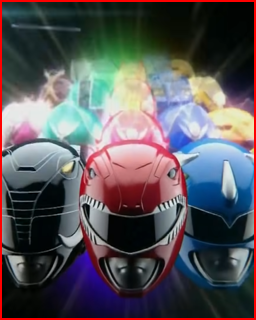
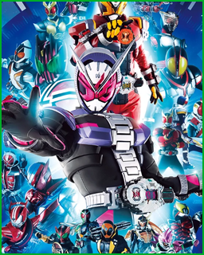
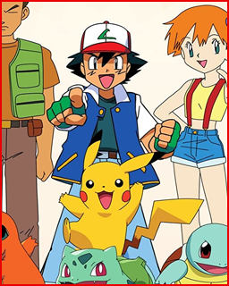

Escolha um dos temas abaixo e comece a brincar. Nem todas as aberturas estarão disponíveis, depende do que o YouTube deixou eu pegar.
 Power Rangers  Kamen Rider
 Pokémon
Criado por Rafael, Fevereiro de 2021.